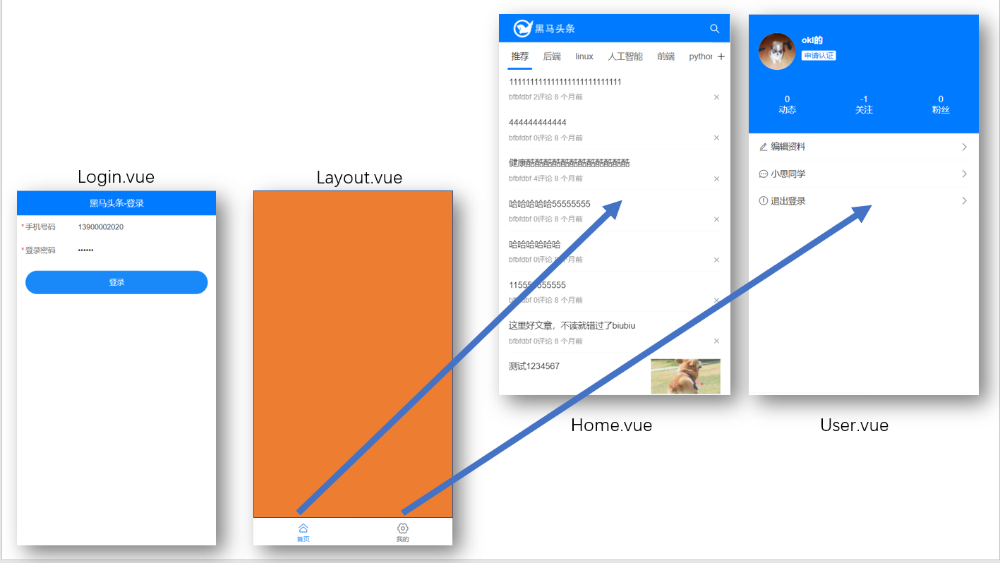
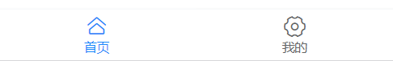
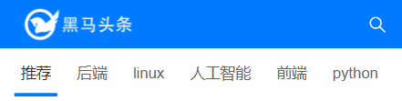
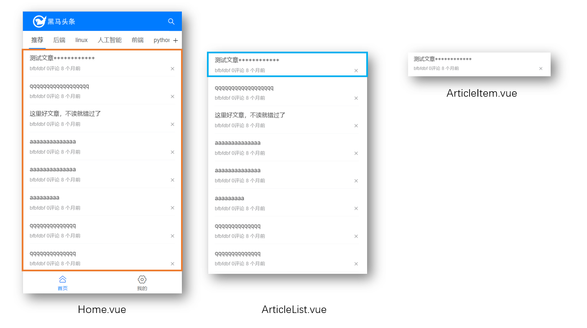
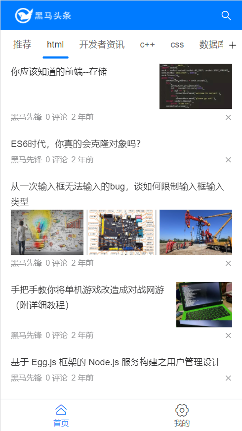

Day02_首页
# 今日学习目标
- 完成Layout布局和底部导航
- 完成首页布局
- 完成文章列表的铺设
- 学会使用加载更多和刷新组件
# 1.Layout_结构分析
# 目标
- 分析网页结构(Layout布局)
- 分析路由层级
# 思路 - 页面划分
- Login.vue 和 Layout.vue 是一级路由页面
- Home.vue和User.vue应该是嵌入在Layout.vue页面里的二级路由页面

# 步骤 - 页面创建
创建Layout/index.vue
<template> <div> <!-- 二级路由页面 --> <router-view></router-view> <!-- 下面底部导航 --> </div> </template> <script> export default { name: 'Layout' } </script>创建Home/index.vue
创建User/index.vue
# 路由配置
router/index.js - 设置以上3个页面的路由配置
import Vue from 'vue'
import VueRouter from 'vue-router'
import Login from '@/views/Login'
import Layout from '@/views/Layout'
import Home from '@/views/Home'
import User from '@/views/User'
Vue.use(VueRouter)
const routes = [
{
path: '/',
redirect: '/layout' // 这里默认打开首页(layout页下的home)
},
{
path: '/login',
component: Login
},
{
path: '/layout',
component: Layout,
redirect: '/layout/home', // 默认显示二级页面为home首页
children: [
{
path: 'home',
component: Home
},
{
path: 'user',
component: User
}
]
}
]
const router = new VueRouter({
routes
})
export default router
# 小结
二级路由如何配置?
- 在一级对象里设置children
# 2.Layout_底部导航
# 目标
TabBar组件使用

# 底部导航
查找Vant组件库文档, 全局注册, 在main.js
import { Tabbar, TabbarItem } from 'vant' Vue.use(Tabbar) Vue.use(TabbarItem)给Layout页面底部设置TabBar导航
<template> <div> <!-- 二级路由页面 --> <router-view></router-view> <!-- 底部导航 --> <van-tabbar v-model="active" route> <van-tabbar-item icon="home-o" to="/layout/home">首页</van-tabbar-item> <van-tabbar-item icon="setting-o" to="/layout/user">我的</van-tabbar-item> </van-tabbar> </div> </template> <script> // 需求: 底部导航 // 1. 复制tabbar组件过来 // 2. 设置route集成路由功能 // 3. 设置to属性, 点击跳转路由页面 // 4. tabbar上设置route和to属性, 点击底部导航就可以切换路由页面 export default { name: 'Layout', data () { return { active: 0 } } } </script>美化样式, 给router-view外面, 套一个div.home_container, 并且防止二级页面内容, 被底部导航挡住
<template> <div class="home_container"> <!-- 二级路由页面 --> <router-view></router-view> </div> </template> <style scoped lang="less"> /* 内容底部内边距(把内容往上挤压, 防止内部被底部导航挡住) */ .home_container { padding-bottom: 50px; } /* 底部导航上边框 */ .van-tabbar { border-top: 1px solid #f8f8f8; } </style>运行, 测试点击底部导航, 页面是否跳转
# 小结
TabBar组件上写什么属性, 集成路由功能?
- route属性
为何内容要设置底部内边距
- 防止底部导航挡住内容
# 3.Layout_登录跳转
# 目标
登录成功, 跳转到Layout页面

# 实现
在Login/index.js内, 登陆成功逻辑处末尾
// 跳转到Layout页面
this.$router.replace({
path: '/layout'
})
# 小结
$router和$route区别是?
$router下用于跳转路由
$route是路由信息对象
路由的push和replace方法区别?
push跳转后, 可以返回
replace跳转后, 无法返回
# 4.首页_头部标签
# 目标
首页头部标签展示
# 头部标签
使用NavBar组件, 和图标Icon组件
查找文档, main.js - 全局注册
之前已经注册过NavBar组件(做登录时), 所以这里只注册Icon组件
import { Icon } from 'vant' Vue.use(Icon)分析, 在Home页面头部使用
学生问: 为何不在Layout上面使用?
答案 : 如果使用, 则所有二级页面都有头了, 但实际上只有Home页面头部有
<template> <div> <!-- 头部标签 --> <van-nav-bar fixed> <template #left> <!-- <img class="logo" src="../../assets/toutiao_logo.png" alt="" /> --> <img class="logo" :src="imgObj"/> </template> <template #right> <van-icon name="search" size="0.48rem" color="#fff"/> </template> </van-nav-bar> </div> </template> <script> import logoPng from '../../assets/toutiao_logo.png' export default { name: 'Home', data () { return { imgObj: logoPng } } } </script>美化logo的样式
<style scoped lang="less"> .logo { width: 100px; height: 30px; } </style>
# 小结
为何插槽看不见slot标签?
因为你用的vant组件, 组件内部写好了slot, 你只需要使用即可
JS里引入图片为何import
因为脚手架底层运作是webpack, 图片会认为是模块, 需要模块化导入
# 5.首页_频道铺设
# 目标
- 频道导航铺设

# 布局
文档查找类似组件 - Tab标签页 - main.js注册
import { Tab, Tabs } from 'vant' Vue.use(Tab) Vue.use(Tabs)注册组件后, 在首页对应位置使用, 切换动画设置
<!-- 频道部分 --> <van-tabs v-model="active" animated> <van-tab title="标签 1">内容 1</van-tab> <van-tab title="标签 2">内容 2</van-tab> <van-tab title="标签 3">内容 3</van-tab> <van-tab title="标签 4">内容 4</van-tab> </van-tabs>发现: 内容1, 内容2, 内容3, 内容4, 对应的是tab标签下面对应的内容区域(插槽技术)
被定位的头部导航挡住, 给tabs设置固定定位/粘性定位, 距离上边46px(手动转rem)
<van-tabs v-model="active" animated sticky offset-top="1.226667rem" >tab栏内容部分, 也要给tab导航定位留出距离
/* tab内容距离tab导航的距离 */ /deep/ .van-tabs__content{ padding-top: 44px; }
# 小结
tab组件和内容是什么关系?
分别一一对应的关系, 分别独立, 互不影响
粘性定位是什么?
正常随着页面滚动, 到达指定位置, 变成固定定位
# 6.首页_频道数据
# 目标
- 频道动态数据铺设
# 定义接口
查看线上接口文档(http://123.57.109.30:8080/), 在api/index.js - 定义接口方法
==如果未登录返回默认频道(新手机号可能只有1个推荐频道)==
// 频道 - 用户已选列表 export const userChannelAPI = () => request({ url: '/v1_0/user/channels', headers: { Authorization: 'Bearer ' + store.state.token } })Home/index.vue引入接口方法, created函数中发起请求
import { userChannelAPI } from '@/api' export default { data () { return { // ...省略其他 channelList: [] // 频道数据 } }, async created () { const res = await userChannelAPI() this.channelList = res.data.data.channels } }循环铺设频道
<!-- 频道部分 --> <van-tabs v-model="active" animated sticky offset-top="1.226667rem"> <van-tab v-for="item in channelList" :key="item.id" :title="item.name"> {{ item.name }} </van-tab> </van-tabs>覆盖导航标记条的颜色, styles/cover.less
// Tabs标签页 @tabs-bottom-bar-color:#007bff;
# 小结
循环后, 请问tab的内容是一个还是多个?
循环是分别独立执行的, 每个tab还是对应自己的内容(只不过现在都一样)
登录和未登录返回的频道有什么区别?
登录就会传递token给后台, 返回对应用户的频道
未登录后台返回默认的频道
# 7.文章_列表布局(上午结束)
# 目标
- 铺设文章列表
- 组件拆分分析
- ==先不管图片, 迈出一小步==
# 文章列表组件
我可以直接把标签, 铺设到Home页面, 但想分散后, 看着结构清晰

# 创建ArtileItem组件
vant组件库van-cell全局注册
import { Cell } from 'vant' Vue.use(Cell)创建Home/components/ArticleItem.vue文件 ==无vue代码, 复制接着写==
<template> <!-- 一条文章单元格 --> <van-cell> <!-- 标题区域的插槽 --> <template #title> <div class="title-box"> <!-- 标题 --> <span>文章标题</span> </div> </template> <!-- label 区域的插槽 --> <template #label> <div class="label-box"> <div> <span>作者</span> <span>0评论</span> <span>8个月前</span> </div> <!-- 反馈按钮 --> <van-icon name="cross" /> </div> </template> </van-cell> </template> <script> export default {} </script> <style scoped lang="less"> /* 标题样式 */ .title-box { display: flex; justify-content: space-between; align-items: flex-start; } /* label描述样式 */ .label-box { display: flex; justify-content: space-between; align-items: center; } /* 文章信息span */ .label-box span{ margin: 0 3px; &:first-child{ margin-left: 0; } } </style>
# 创建ArticleList组件
创建Home/ArticleList.vue
引入ArticleItem.vue组件, 注册, 多使用几次观察效果
<template> <div> <!-- 文章列表 --> <article-item></article-item> <article-item></article-item> <article-item></article-item> </div> </template> <script> import ArticleItem from './components/ArticleItem.vue' export default { components: { ArticleItem } } </script>
# Home页引入
ArticleList封装后, 要引入到路由页面Home/index.vue才可以看到
<!-- 频道部分 --> <van-tabs v-model="active" animated sticky offset-top="1.226667rem"> <van-tab v-for="item in channelList" :key="item.id" :title="item.name"> <article-list></article-list> </van-tab> </van-tabs> <script> // 只有核心代码 import ArticleList from '@/views/Home/ArticleList' export default { components: { ArticleList } } </script>运行后, 观察网页效果是否出现内容一样的文章列表
==van-tab有类似于懒加载的效果：“只有激活了某个tab标签，才会去加载ArticleList”==
# 小结
文章列表涉及到哪几个组件?
Home > ArticleList > ArticleItem
# 8.文章_列表数据
# 目标
- 请求文章列表数据
- 铺设动态数据
# 定义接口
查看接口文档, 定义接口方法在api下
预约分页思想:
第一次传递timestamp: 传递系统时间
第二次传递timestamp: 用第一次响应结果的pre_timestamp的值
// 文章 - 获取列表 export const articlesListAPI = ({ channelId }) => { return request({ url: '/v1_0/articles', params: { channel_id: channelId, timestamp: (new Date()).getTime() } }) }
# 发起请求
在Home/ArticleList.vue引入, 并发起请求
<template> <div> <!-- 文章列表 --> <article-item></article-item> <article-item></article-item> <article-item></article-item> </div> </template> <script> import ArticleItem from './components/ArticleItem.vue' import { articlesListAPI } from '@/api' export default { components: { ArticleItem }, async created () { const res = await articlesListAPI({ channelId: 0 // 默认推荐频道(id为0) }) console.log(res) } } </script>
# ArticleList循环文章
在ArticleList.vue中, data定义articleList变量接受
v-for循环ArticleItem, 传入文章对象
<template> <div> <!-- 文章列表 --> <article-item v-for="item in articleList" :key="item.art_id" :obj="item" ></article-item> </div> </template> <script> // 核心代码 import { articlesListAPI } from '@/api' export default { data () { return { articleList: [] } }, async created () { const res = await articlesListAPI({ channelId: 0 // 默认推荐频道(id为0) }) this.articleList = res.data.data.results } } </script>
# ArticleItem文章展示
定义props变量obj接收, 从ArticleList传递过来的文章信息对象
替换标签内容
<template> <!-- 一条文章单元格 --> <van-cell> <!-- 标题区域的插槽 --> <template #title> <div class="title-box"> <!-- 标题 --> <span>{{ obj.title }}</span> </div> </template> <!-- label 区域的插槽 --> <template #label> <div class="label-box"> <div> <span>{{ obj.aut_name }}</span> <span>{{ obj.comm_count }} 评论</span> <span>{{ obj.pubdate }}</span> </div> <!-- 反馈按钮 --> <van-icon name="cross" /> </div> </template> </van-cell> </template> <script> export default { props: { obj: { // 文章信息对象 type: Object, default () { return {} } } } } </script>
# 小结
- 铺设文章数据思路是什么?
- 定义接口方法
- Home/index.vue引入发起请求
- 数组传入ArticleList页面
- 循环ArticleItem, 传入文章对象
- 在ArticleItem, 使用文章对象替换信息
# 9.文章_图片判断
# 目标
文章图片铺设
文章图片判断

# 分析
- 什么时候有图片, 什么时候是一张和三张呢?
- 观察数据字段, 发现有个cover.type的值控制数量
- cover.images数组, 里面都是图片的url
# 修改ArticleItem
修改标签结构, 添加单图和三图情况的 (==无vue代码直接复制==)
<template #title> <div class="title-box"> <!-- 标题 --> <span>{{ obj.title }}</span> <!-- 单图 --> <img class="thumb" src="https://img01.yzcdn.cn/vant/cat.jpeg" /> </div> <!-- 三张图片 --> <div class="thumb-box"> <img class="thumb" src="https://img01.yzcdn.cn/vant/cat.jpeg" /> <img class="thumb" src="https://img01.yzcdn.cn/vant/cat.jpeg" /> <img class="thumb" src="https://img01.yzcdn.cn/vant/cat.jpeg" /> </div> </template>美化样式
/* 图片的样式, 矩形黄金比例：0.618 */ .thumb { width: 113px; height: 70px; background-color: #f8f8f8; object-fit: cover; } /* 三图, 图片容器 */ .thumb-box { display: flex; justify-content: space-between; }根据文章信息对象, 判断是否应该出现
替换成真实的图片 / 循环真实图片
<template #title> <div class="title-box"> <!-- 标题 --> <span>{{ obj.title }}</span> <!-- 单图 --> <img class="thumb" :src="obj.cover.images[0]" v-if="obj.cover.type === 1"/> </div> <!-- 三张图片 --> <div class="thumb-box" v-if="obj.cover.type > 1"> <img class="thumb" v-for="(imgUrl, index) in obj.cover.images" :key="index" :src="imgUrl" /> </div> </template>
# 小结
如何区分标签不同的部分
找到数据区分, 如果没有自己想办法创造 / 与后台沟通分析
# 10.文章_时间处理
# 目标
- 把时间转换成多久之前
# 查找工具
dayjs第三方库: https://dayjs.fenxianglu.cn/
下载dayjs到工程中
yarn add dayjs
# 工具函数
以后可能也要处理时间, 所以封装个工具函数
学生问: 为何不使用过滤器
答: 过滤器本身也是个函数, 而且vue3废弃了过滤器, 所以不使用
utils/date.js
import dayjs from 'dayjs'
import relativeTime from 'dayjs/plugin/relativeTime' // 到指定时间需要的插件
import 'dayjs/locale/zh' // 集成中文
/**
* .....多久之前
* @param {*} 之前的时间
* @returns 系统时间到之前指定时间的距离值
*/
export const timeAgo = (targetTime) => {
// 格式化时间
dayjs.extend(relativeTime)
dayjs.locale('zh')
var a = dayjs()
var b = dayjs(targetTime)
return a.to(b) // 返回多久之前...
}
# Home里使用
学生问: 为何不到ArticleItem里直接使用
答: 因为要讲数据预处理
在Home/ArticleList.vue中
import { timeAgo } from '@/utils/date'
export default {
// 核心代码
methods: {
timeAgo: timeAgo
},
async created () {
const res = await articlesListAPI({
channelId: 0 // 默认推荐频道(id为0)
})
// 回来的数据进行预处理, 把时间转成多久多久之前
res.data.data.results.forEach((obj) => {
obj.pubdate = this.timeAgo(obj.pubdate)
})
this.articleList = res.data.data.results
}
}
# 小结
什么是数据预处理?
在使用数据之前, 对数据里的值进行修改
# 11.文章_切换数据
# 目标
点击频道显示不同数据

# 实现
点击频道, 拿到频道ID
频道是用tab 标签页组件, 看文档如何拿到,
- 在van-tabs上修改v-model变量名(把active换成channelId)
- 在van-tab绑定name属性和值(值为频道ID)
- 点van-tab后,name值会自动绑定给v-model(vant组件内部实现的)
<!-- 频道部分 --> <van-tabs v-model="channelId" animated sticky offset-top="1.226667rem"> <van-tab v-for="item in channelList" :key="item.id" :title="item.name" :name="item.id"> <article-list :cid="channelId"></article-list> </van-tab> </van-tabs> <script> export default { data () { return { // ...省略其他(把active换成channelId) channelId: 0, // 频道ID(默认0是推荐) } } } </script>ArticleList内, props定义变量cid, 替换请求的频道
默认会切换ArticleList, 组件创建后, 会重新进行网络请求
export default { // ...核心代码 props: { cid: Number }, async created () { const res = await articlesListAPI({ channelId: this.cid }) // 回来的数据进行预处理, 把时间转成多久多久之前 res.data.data.results.forEach((obj) => { obj.pubdate = this.timeAgo(obj.pubdate) }) this.articleList = res.data.data.results } }
# 小结
点击频道切换数据如何做的?
- 点击频道v-model变量绑定对应name值, 即频道ID
- 然后传给ArticleList, 里面会重新请求频道
# 12.文章列表_加载更多-准备
# 目标
手指往上拉, 底部加载更多

# 思路
- 要判断是否滚动到底部
- 给后台传递页码 / 偏移量, 拿到新数据
- 和现有数据合并到一个数组里
- 寻找vant组件, 叫list组件
# 步骤
main.js - 注册list组件
import { List } from 'vant' Vue.use(List)套上文章列表组件, 在Home/ArticleList中
<van-list v-model="loading" :finished="finished" finished-text="没有更多了" @load="onLoad" > <!-- 文章列表 --> <article-item v-for="item in articleList" :key="item.art_id" :obj="item" ></article-item> </van-list>定义变量和方法
export default { data () { return { articleList: [], // 文章列表 loading: false, // 底部加载状态 finished: false // 数据是否全部加载完成 } }, methods: { // 底部加载 onLoad () { } } }触底的距离有点远, 查文档, 设置list组件属性offset="50"
<van-list v-model="loading" :finished="finished" finished-text="没有更多了" @load="onLoad" offset="50" >网页刚上来不监测是否触底, 不执行load事件
问题: created和onLoad会分别上来走一次请求, 拿回来2次第一页数据
<van-list v-model="loading" :finished="finished" finished-text="没有更多了" @load="onLoad" offset="50" :immediate-check="false" >
# 13.文章列表_加载更多-功能
# 目标
分析如何拿到下一页数据, 发现接口文档有个timestamp, 说明下一页要用上一次请求成功的pre_timestamp的值
Home/ArticleList.vue, data里定义变量nextTime
在文章列表获取成功时, 接收pre_timestamp的值
调用接口传入nextTIme
接收数据合并到现有数组中
判断是否全部加载完成
代码有点多了, 可以单独定义个getArticleList方法调用
# 步骤
修改api接口, 添加额外的时间戳
// 文章 - 获取列表 export const articlesListAPI = ({ channelId, timestamp }) => { return request({ url: '/v1_0/articles', params: { channel_id: channelId, timestamp: timestamp || (new Date()).getTime() } }) }创建getArticleList方法, 在created里调用
data () { return { // ...省略其他 nextTime: null // 用于加载更多(分页) } } methods: { async getArticleList () { // 负责拿文章列表数据 const res = await articlesListAPI({ channelId: this.cid, timestamp: this.nextTime }) console.log(res) // 回来的数据进行预处理, 把时间转成多久多久之前 res.data.data.results.forEach((obj) => { obj.pubdate = this.timeAgo(obj.pubdate) }) // 如果无数据 if (res.data.data.results.length === 0) { this.finished = true // 告诉list组件直接底部显示没有更多数据 } else { this.nextTime = res.data.data.pre_timestamp // 保存下一页数据的时间(做分页用) this.articleList = [...this.articleList, ...res.data.data.results] // 等待网络请求结果后 this.loading = false // 底部加载更多状态 } } } async created () { this.getArticleList() }
# 小结
list组件2个变量控制什么?
loading控制底部是否显示加载中状态
finished控制底部是否显示全部加载完成
list组件使用注意哪几点?
- list组件触底后, 自动执行load事件和对应onLoad方法, 并把loading值改为true
- 异步数据加载完毕, 合并数据, 把loading改为false, 以后再让list自动执行load事件
- 异步数据加载完毕, 判断没有数据了, 把finished改为true, 以后再也不出load事件
为何要把新数组和就数组拆开合并起来?
- 为了让页面数据更多, 撑高list组件, 让用户继续滚动
# 14.文章列表_加载更多-重复bug
# 目标
- 发现网络请求上来走了2次一样的
- 分析原因: list组件和created都走了 (list上来发现组件底部在可视区域, 就触发load事件)
- 解决: 在load事件方法中判断, 只有页面上有数据, 再触底才执行加载逻辑
# 解决
在ArticleList.vue中判断一下
// 底部加载 onLoad () { // 有第一页数据以后, onLoad再发请求 if (this.articleList.length > 0) { this.getArticleList() } }
# 小结
- 为什么要给onLoad里加入判断?
- 网页打开list组件自动检查会触发一次onLoad, 而我要在有数据后
- 再让onLoad里请求数据
# 15.文章列表_下拉刷新
# 目标
手指往下拉, 顶部刷新

# 思路
- 实现页面上下拉效果 - vant组件里的list组件
- 刷新要把旧数组清空, 时间回到系统时间, 重新发起一次请求, 第一页数据
# 步骤
找到Vant组件库文档, main.js - 全局注册PullRefresh组件
import { PullRefresh } from 'vant' Vue.use(PullRefresh)套在要刷新的文章列表外, ==van-list外层==
<van-pull-refresh v-model="isLoading" @refresh="onRefresh"> <van-list v-model="loading" :finished="finished" finished-text="没有更多了" @load="onLoad" offset="50" > <!-- 文章列表 --> <article-item v-for="item in articleList" :key="item.art_id" :obj="item" ></article-item> </van-list> </van-pull-refresh>定义变量和方法
export default { data () { return { // ...省略了其他变量(不要删除啊) isLoading: false // 顶部刷新状态 } }, methods: { // 顶部刷新事件方法 onRefresh () { this.nextTime = null this.articleList = [] this.getArticleList() } } }一定注意, 数据异步刷新完毕, 要关闭isLoading状态
this.isLoading = false // 顶部加载状态关闭
# 小结
刷新的原理是什么?
- 获取手指移动距离, 然后transform移动标签
刷新流程是什么?
- 页码回到第一页, 现有数据数组清空, 重新调用获取文章接口
# 扩展-自己写多久之前
relativeTime (val) {
const t = new Date(val)
const diff = Date.now() - t.getTime()
const year = Math.floor(diff / (1000 * 3600 * 24 * 365))
if (year) {
return `${year}年前`
}
const month = Math.floor(diff / (1000 * 3600 * 24 * 30))
if (month) {
return `${month}月前`
}
const day = Math.floor(diff / (1000 * 3600 * 24))
if (day) {
return `${day}天前`
}
const hour = Math.floor(diff / (1000 * 3600))
if (hour) {
return `${hour}小时前`
}
const minute = Math.floor(diff / (1000 * 60))
if (minute) {
return `${minute}分钟前`
} else {
return '刚才'
}
}